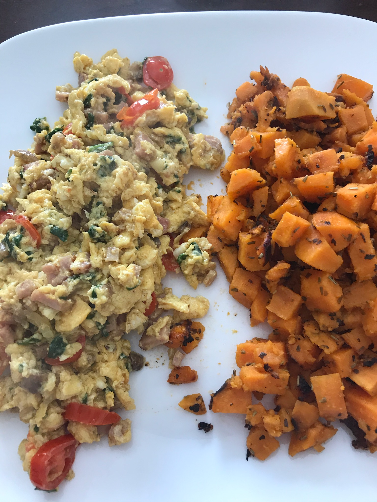

Egg and Sweet Potato Breakfast
Created in collaboration with my mom and inspired by Nanaaba's Kitchen, comes a fresh take on breakfast. Bursting with flavor and packed with important proteins and nutrients, you'll want to savor every bite.
*Recipe serves 2 people
Ingredients
- 4 sweet potatoes, peeled and cubed
- 2 tablespoons olive oil
- Salt and pepper to taste
- 1/2 teaspoon of thyme
- 1/2 teaspoon of basil
- 6 large eggs, whisked
- 1/4 of a large yellow onion, chopped
- 1 cup spinach
- 8 white mushrooms, sliced or diced
- 1 roma tomato, diced (or use a handful of cherry tomatoes)
- 1/4 pound Black Forest Ham, diced
- 1 tablespoon butter
- 1 teaspoon curry powder
- A pinch of thyme
- Salt and pepper to taste
Directions
Note: Both recipes cook at vastly different times. To be able to serve both recipes at the time, start the sweet potatoes first as they take significantly longer. When they look to be about half-way done, at around 5 mins, begin making your eggs.
Sweet Potatoes:
- Put 2 tablespoons of olive oil in a medium skillet over medium heat.
- Add your sweet potatoes to the skillet, season with 1/2 teaspoon of thyme and 1/2 teaspoon of basil, adding salt and pepper as needed. Make sure to cover the sweet potatoes with a lid as this helps them cook more evenly
- Occasionally lift the lid and stir the sweet potatoes. Repeat this process until the sweet potatoes become soft and turn a deeper shade of orange.
Eggs:
- In a medium skillet, melt 1 tablespoon of butter over medium heat. Once the butter has browned, add your onions, tomatoes, mushrooms, spinach, and ham. Add curry powder and Saute until the onions turn translucent.
- Next, add your eggs to the pan and fold the sauteed ingredients into them, continually stirring.
- Once they are well-scrambled, finish seasoning with salt, pepper, and thyme.
- Serve with sweet potatoes. Enjoy one hearty breakfast!
Acknowledgments: